Анархия · Java 1.21.11 · Paper
KOCHBRATAN
Анархия, где восходит Кровавая луна. Пять боссов с фазами, своё небо и свои мобы — и ни одного телепорта.
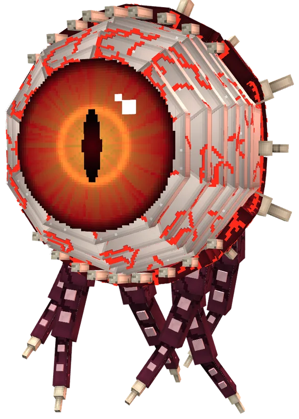
Когда небо наливается кровью
Обычная ночь может стать Кровавой. Небо краснеет, звёзды гаснут, а раз в полторы минуты над миром раскрывается огромный глаз — осматривает всех и медленно закрывается. Играет своя музыка. Спать нельзя до рассвета.
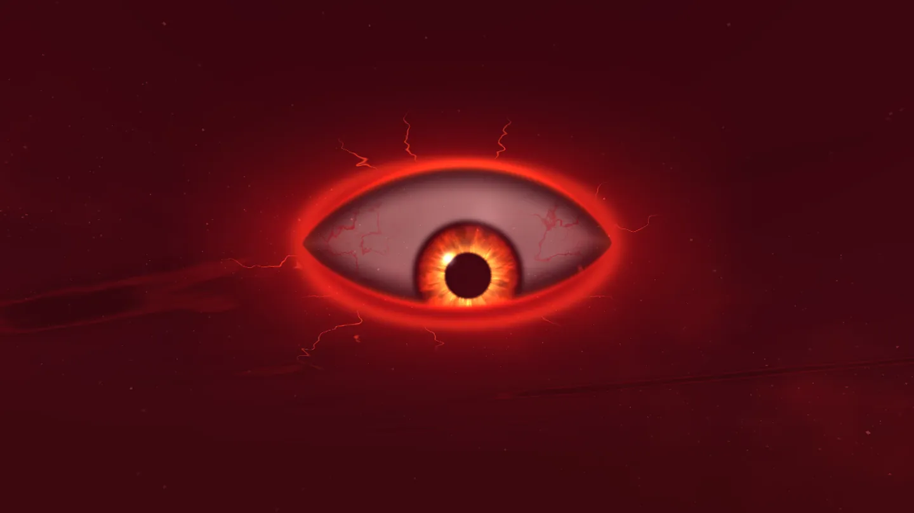
- ×2
Монстров вдвое больше — и добычи тоже
Опыт и лут удвоены, эндермены могут уронить панцирь шалкера.
- ☾
Выходят свои мобы
Не перекрашенные зомби, а новые существа со своими моделями, атаками и анимациями. Днём горят.
- ♛
Награда лучшему охотнику
Кто за ночь убьёт больше всех монстров, утром получает приз.
- ☠
Ночь охоты
Убил игрока ночью — с него падает его голова-трофей и бонусный опыт.
Твари луны
Элита
Редкие, сильные, с подписью над головой и своим лутом.
То, чего лучше не видеть
Херобрин стоит вдалеке и смотрит. Заметишь — исчезнет. Мимик — точная копия одного из игроков онлайн, с его скином и бронёй. Ходит как человек. Один удар — и он рассыпается.
Каждая третья луна приводит босса
Он поднимается из-под земли где-то в мире, координаты приходят в чат, ночь замирает вдвое дольше. У каждого — своя модель, свои атаки, три фазы с превращением и своя музыка в радиусе 200 блоков. На всё — полтора часа.
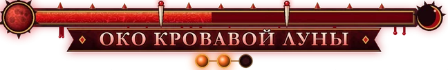
Око Кровавой Луны
Парящий глаз с венами, живым зрачком и веками в зубах. Сомкнёт веки — урон не проходит, раскроет — смотрит прямо на тебя.
- IВзгляд. Луч с прицелом, кровавый дождь по меткам, «не смотри на Око» — отвернись, или ослепнешь.
- IIОко гневается. Зрачок сужается в щель, луч сканирует землю, из слёз рождаются Глазастики.
- IIIОко раскалывается. Тройной луч, притяжение — и веки захлопываются, как пасть.
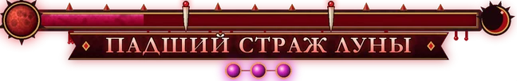
Падший Страж Луны
Великан из чёрного базальта в доспехах лунного серебра, вдвое выше игрока. Спереди его держит башенный щит — бей сзади, ломай щит топором или заставь врезаться в стену.
- IСтраж. Удар молотом — перепрыгни ударную волну, удар щитом, таран.
- IIЛуна в груди. Нагрудник трескается, ядро пылает. Прыжок с воронкой, осколки луны падают в алые круги.
- IIIБез щита. Щит разлетается. Вихрь молотом и трещины по земле к каждому, кто рядом.
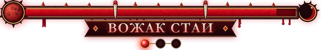
Вожак Стаи
Лютоволк с багровой гривой и шипами вдоль хребта. Ходит со стаей — пока она жива, держит удар лучше.
- IОхота. Укус, прыжок с укусом в полёте, удары лапами на задних, стая окружает жертву.
- IIКровавая ярость. Жилы загораются, приходят призрачные волки, рывок насквозь.
- IIIПоследний вой. Поглощает стаю и становится быстрее. Прижимает к земле и не отпускает.
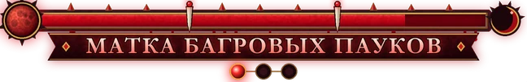
Матка Багровых Пауков
Хитиновая паучиха с восемью глазами и брюхом, полным яиц. Стрелы её почти не берут.
- IГнездо. Плевок паутиной, кислотный залп брюхом, прыжок с ударной волной, удары лапами по меткам.
- IIВыводок. Брюхо светится, лезут паучата, паутинный шторм во все стороны.
- IIIЯрость Матки. Брюхо трескается, она быстрее и кусается серией с ядом.
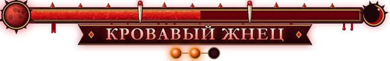
Кровавый Жнец
Парящий призрак с косой и фонарём душ. Под разорванной робой — рёбра и горящее сердце.
- IЖнец. Исчезает и возникает за спиной, круговой взмах, коса-бумеранг, цепь душ тянет к нему.
- IIБез маски. Капюшон сгорает, над черепом — огненная корона. Двойной взмах, тени.
- IIIЖатва. Кровавый туман лечит его — бейте быстрее. Танец смерти: три рывка сквозь вас.
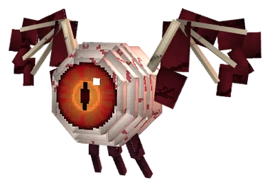
Глазастиклетает рядом с Оком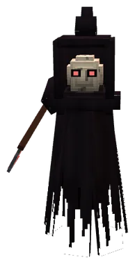
Тень Жнецамаленькие жнецы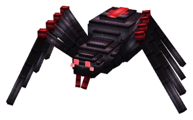
Паучоноккусает с ядом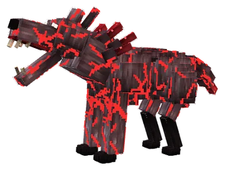
Волки стаии призрачные волкиСвоё небо — у каждого, кто принял пак
Небо перерисовано шейдерами: настоящий Млечный путь, туманности и галактики, падающие звёзды, северное сияние в некоторые ночи, перистые облака днём и розовые закаты. Без модов — только ресурспак сервера.
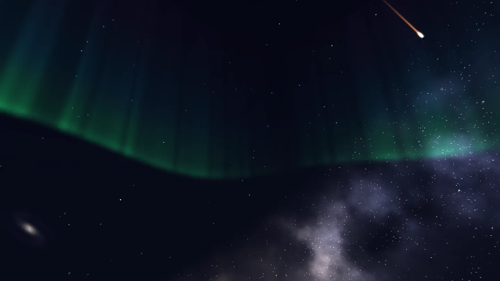
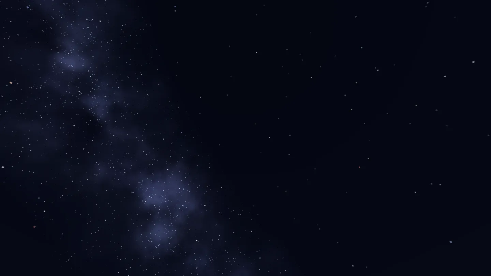
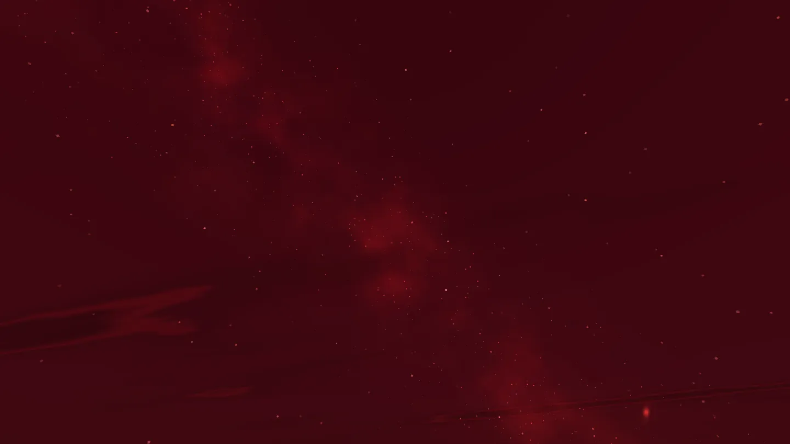
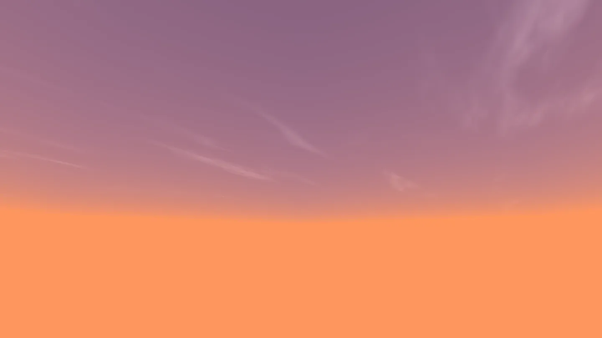
Написано под этот сервер
Всё, что выше, и всё, что ниже, — свой плагин KOCHBRATAN и свой ресурспак. Такого нет на других анархиях, потому что это делали здесь.
Маски
Хоккейная, чумной доктор, череп, они, ниндзя, тыква, кровавая луна, рыцарь, кибер, противогаз. Надеваются на голову поверх скина и видны всем, у кого принят пак.
Шалкеры в руке
Нажми на шалкер прямо в инвентаре или в эндер-сундуке — он откроется. Не надо ставить его на землю посреди поля боя.
Ушки и хвосты — лиса, кошка, волк, кролик, енот, дракон. Хвост держится за тело и не мешает от первого лица.
Звездопад
Иногда ночью падают метеориты. Перед каждым — примерные координаты, в воронке обломки, алмазы и сундук.
Свадьбы
Да, здесь женятся — прямо в игре.
Кланы
Собери своих: общая база, свои — или друг против друга.
Трейд, голос, карта
/trade — обмен без «кинул на алмазы». Simple Voice Chat — слышно, кто рядом и кто подкрадывается. Миникарта Xaero есть, но игроков на радаре нет — ищи глазами. И /sit, когда больше ничего не остаётся.
Своя музыка
Тема Кровавой луны и пять боевых тем боссов — написаны для сервера.
Правил почти нет. Эти — железные
Анархия — не значит «всё можно». Читы ломают игру всем, поэтому за ними следит GrimAC.
- IБез читовПолёт, x-ray, killaura — GrimAC видит всё.
- IIВыход из боя = смертьПосле удара 20 секунд. Закрыл игру — персонаж погиб.
- IIIТелепортов нетТолько ноги, лодки и элитры.
- IVЭнд закрытВесь движ — в обычном мире и в аду.
- VСвапы разрешеныБыстрая смена оружия — механика, а не баг.
- VIОстальное можноГриф, PvP, ловушки, предательства.
Четыре шага — и ты под луной
Никаких заявок. Подойдёт любой лаунчер — лицензия не нужна.
- 01
Запусти 1.21.11
Java Edition, любой лаунчер.
- 02
Добавь сервер
Вставь адрес в список серверов.
kochbratan.wellduck.org - 03
Прими ресурспак
Без него не увидишь боссов, мобов луны, маски и небо. Около 7 МБ, один раз.
- 04
Зарегистрируйся
Пароль придумай свой.
/reg пароль пароль
Коротко о главном
Нужна лицензия?
Нет. Заходи с любого лаунчера, регистрация прямо в игре: /reg пароль пароль.
Обязательно принимать ресурспак?
Играть можно и без него, но тогда не будет видно моделей боссов и мобов Кровавой луны, масок, ушек и нового неба — вместо них простые заглушки. Пак весит около 7 МБ и скачивается один раз.
Как часто бывает Кровавая луна и боссы?
Каждая ночь может оказаться Кровавой — шанс около 15%. Каждая третья Кровавая луна приводит босса: ночь замирает вдвое дольше, координаты приходят в чат.
Можно ли играть с модами?
Клиентские моды для оптимизации и миникарта Xaero — можно. Читы, x-ray и полёт — нельзя, за этим следит GrimAC.
Что будет, если выйти в бою?
Персонаж погибнет. После удара есть 20 секунд, чтобы не закрывать игру.
Будет ещё вайп?
В конце октября 2026 мир обнулили — все начали с нуля. О следующем вайпе объявим заранее.
Луна взойдёт. Вопрос — кто доживёт до рассвета
Java 1.21.11 · любой лаунчер · лицензия не нужна